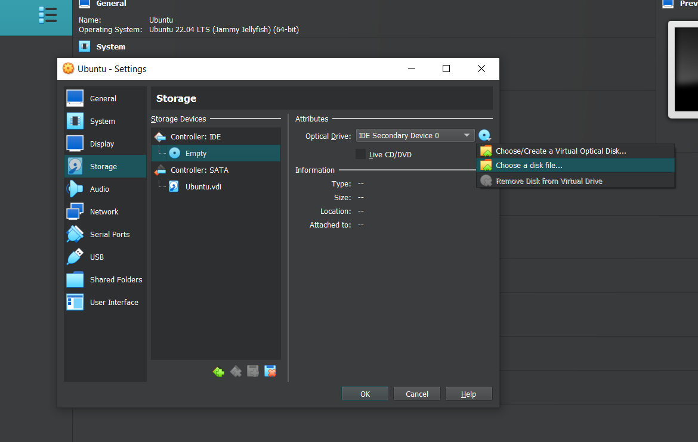

Based on YT tuto:
https://www.youtube.com/watch?v=j1FAZ0bUEvs&ab_channel=PingvinusTo start with (Oracle) VirtualBox you need to download it and install it.
https://www.virtualbox.org/wiki/End-user_documentationIf Visual Studiio C++ RUNTIME is not yet installed on you machine - you should do it.
You can find some useful tips here:
https://www.scmgalaxy.com/tutorials/virtualbox-issues-oracle-vm-virtualbox-7-0-0-needs-the-microsoft-visual-c-2019-redistributable-package/Visual C++ download:
https://learn.microsoft.com/en-us/cpp/windows/latest-supported-vc-redist?view=msvc-170My choise is 64 :
https://aka.ms/vs/17/release/vc_redist.x64.exeVisit Canonical Ubuntu main page:
https://ubuntu.com/download/desktopDownload Ubuntu image:
https://ubuntu.com/download/desktop/thank-you?version=22.04.1&architecture=amd64
As it pretty size downloading may take a few minutes...
Make sure you started VB first !)
To presetup HOST site evironment go to related menu:
Prepare Virtual-Box for hosting your image:
Choosing presicely is optional:
Set disk space for future Ubuntu (for example 10Gb):
RAM capacity available setup (e.g. 4096 Mb = 4Gb):
CPU - is also available to set (50% of entire cores - 2) for productivity:
We can set maximum 128 Mb Video-card integrated RAM for our VM:
...somsing like this...
Congrats: Your presetub is successfully finished!
Use settings menu to add ubuntu image to your VM:
Storage tab -- exactly what you need:
Popping up dialogue menu help you to pick right file in no time:
Choose previously downloaded "Canonical" Ubuntu.ISO:
Now your Virtual-box manager is prepared to start virtual ubuntu iso-image:
Chose language, user-name and so on:
Let installer know what to do with Virtual HDD:
...wait for a several minutes (depend on your real machine capabilities) ...

Most likely you pressed enter to skip booting from virtual CD-ROM again...
Hope you didn't forgot your password yet:

Azmazing!!! How many software apps are there on Ubuntu just out of the box!)

To make closer the moment of seeing effectivity of our own efforts install utilities that help to engage our HOST and GUEST systems type in '' in terminal and press enter (and also enter password and 'y'...)

When its been done ... then power-off our virtual OS to make furthure setups.
Reboot virtual Ubuntu to proceed.

Now we should power off our virtual Machine to ajust it additionally. In settings tab we can choose 'General->advanced' and enable clipboard sharing option to 'Bidirectional' what means that HOST and GUEST OS could interect via shared clipboard.
To setup shared folders choose 'Shared folders' tab in settings window and add folder and mount-point. For test purposes in dialog menu we created 'C:\VM_share' folder an chose it to be shared. Select 'Auto-mount' option. You can also assign an alias to you shared folder inside input field called 'Mount-point:'[] This path will be able on HOST system (in our case inside Ubuntu OS).
Also we can enable Drag'n'drop capability on place to freely drag'drop files between systems as well.
Additionaly you can adjust Grafical settings in tab 'Display' and enable '3D Acceleration' if it needed (with powered off GUEST OS).
Now let's run presettuped VM (by pressing START button in Virtual-box GUI).
All is fine ...

...but...

If your mounted CD-ROM has not been autorun you can run its "autorun.sh"...

Run terminal. It is located in root (!not home), via path: root/media/USER-NAME/CDROM-NAME/autorun.sh So if you are entering ./autorun.sh previously chosen right directory it will be immidiately executed and your CD drive (inside your virtual Ubuntu) will be started.

At this moment we Ubuntu is not allowing to use previously chosen (shared) directory. To finish this setup add ubuntu-user permission to use this folder by typing in terminal: sudo adduser USERNAME vboxsf wich stand for virtual-box user for S-hared F-older On this stage you can already use share clip-board (pasting via CTRL+SHIFT+V for example))) Reboot (restart) Virtual Ubuntu to use new-added 'previleguies' :)

Shared directories passing tests!)


Our drag'n'drop and clipboard sharing works as expected:

You can switch your virtual Ubuntu to full-screen mode with pressing down 'rCTRL + F' (right-CTL button is commonly used in Virtual Box and calling HOST instead of 'WIN' or 'CmD') (with system focused on VM window)
Full-screen mode switching works too:
P.S. very last screenshots were taken in fullscreen mode, and usability of Shared-Folder is proved now as well.